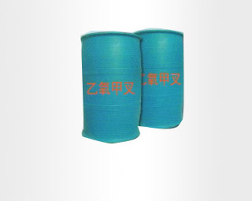

-

-
乙氧甲叉
年产量：1200吨
技术指标：》90%
包装：200公斤/桶
产品介绍
4月，纺织品出口105.6亿美元，增长9.4%，服装出口132亿美元，增长4.5%，其中大宗商品针、梭织服装合计出口29.1亿件(套)，增长13.3%，出口平均单价下跌7.7%。1~4月，纺织品和服装分别出口335.9亿美元和482.9亿美元，分别增长4.3%和0.7%。针织和梭织服装合计出口102.2亿件(套)，增长8.2%，出口平均单价下跌6.8%。
4月，重点出口地区中，浙江、江苏、山东、上海均实现出口增长，广东、福建下降。其中广东全国出口排名第二的位置已被江苏超越，退居第三。1~4月，广东和福建出口下降较快，降幅分别为6.4%和15%，浙江、江苏和山东仍保持较平稳增长。中、西部地区出口增长不平均、省内增减变化幅度大的特点依然存在。如四川一季度时累计出口增长近20%，但4月即出现41%的大幅下降。
对欧盟出口继续向好
4月，我国对欧盟出口继续向好，增幅进一步提升。当月出口39.9亿美元，增长33%。其中大类商品针梭织服装出口量增长26.3%，纺织制成品出口额增长23%。1~4月，欧盟超越其他地区，成为我出口增长最快的主要市场。累计出口额150.8亿美元，增长15.4%，其中针、梭织
出口概况
服装出口量增价跌
4月，纺织品出口105.6亿美元，增长9.4%，服装出口132亿美元，增长4.5%，其中大宗商品针、梭织服装合计出口29.1亿件(套)，增长13.3%，出口平均单价下跌7.7%。1~4月，纺织品和服装分别出口335.9亿美元和482.9亿美元，分别增长4.3%和0.7%。针织和梭织服装合计出口102.2亿件(套)，增长8.2%，出口平均单价下跌6.8%。
4月，重点出口地区中，浙江、江苏、山东、上海均实现出口增长，广东、福建下降。其中广东全国出口排名第二的位置已被江苏超越，退居第三。1~4月，广东和福建出口下降较快，降幅分别为6.4%和15%，浙江、江苏和山东仍保持较平稳增长。中、西部地区出口增长不平均、省内增减变化幅度大的特点依然存在。如四川一季度时累计出口增长近20%，但4月即出现41%的大幅下降。
对欧盟出口继续向好
4月，我国对欧盟出口继续向好，增幅进一步提升。当月出口39.9亿美元，增长33%。其中大类商品针梭织服装出口量增长26.3%，纺织制成品出口额增长23%。1~4月，欧盟超越其他地区，成为我出口增长最快的主要市场。累计出口额150.8亿美元，增长15.4%，其中针、梭织服装累计出口量增长14.9%，出口平均单价提升2%。
对美出口保持良好增势
4月，我国对美出口32.5亿美元，增长17.1%，增幅较3月份再度扩大6个百分点。其中纺织品和服装出口分别增长13.6%和18.7%。
1~4月，对美累计出口116亿美元，增长5.，重点出口地区中，浙江、江苏、山东、上海均实现出口增长，广东、福建下降。其中广东全国出口排名第二的位置已被江苏超越，退居第三。1~4月，广东和福建出口下降较快，降幅分别为6.4%和15%，浙江、江苏和山东仍保持较平稳增长。中、西部地区出口增长不平均、省内增减变化幅度大的特点依然存在。如四川一季度时累计出口增长近20%，但4月即出现41%的大幅下降。
对欧盟出口继续向好
4月，我国对欧盟出口继续向好，增幅进一步提升。当月出口39.9亿美元，增长33%。其中大类商品针梭织服装出口量增长26.3%，纺织制成品出口额增长23%。1~4月，欧盟超越其他地区，成为我出口增长最快的主要市场。累计出口额150.8亿美元，增长15.4%，其中针、梭织服装累计出口量增长14.9%，出口平均单价提升2%。
对美出口保持良好增势
4月，我国对美出口32.5亿美元，增长17.1%，增幅较3月份再度扩大6个百分点。其中纺织品和服装出口分别增长13.6%和18.7%。
1~4月，对美累计出口116亿美元，增长5.，重点出口地区中，浙江、江苏、山东、上海均实现出口增长，广东、福建下降。其中广东全国出口排名第二的位置已被江苏超越，退居第三。1~4月，广东和福建出口下降较快，降幅分别为6.4%和15%，浙江、江苏和山东仍保持较平稳增长。中、西部地区出口增长不平均、省内增减变化幅度大的特点依然存在。如四川一季度时累计出口增长近20%，但4月即出现41%的大幅下降。
对欧盟出口继续向好
出口分别增长13.6%和18.7%。
1~4月，对美累计出口116亿美元，增长5.8%，其中纺织品和服装分别增长6.8%和5.4%，纺织品增幅仍超过服装。服装中大类商品针、